To install Mega Slider module, is not much different to installing any other (free) Drupal modules, so you might be familiar with this process already. If not, please follow instructions below.
You can install by using Drupal module uploader or using FTP
Click Install and wait while plugin is uploaded to your server
After successfully message, click "Enable newly added modules"
Click Install new module
Browse to the ctools module file.
Click Install and wait while plugin is uploaded to your server
After successfully message, click "Enable newly added modules"
Browse to the module's zip file (it is located in the folder you've downloaded from CodeCanyon) and choose that file.
Click Install and wait while plugin is uploaded to your server
After successfully message, click "Enable newly added modules"
Find MD Slider and tick the checkbox (make sure it is checked)
Scroll to bottom and click Save configuration
You maybe ask to install dependent module, just click accept to install it
FTP
You can also install MD Slider via FTP
Download and extract media, Ctools module, you will get folder named "media" and "ctools" .
Browse to the module's zip file (it is located in the folder you've downloaded from CodeCanyon) and extract that file, you will get folder named "md_slider"
Open your FTP program and FTP into your site and navigate to the sites/all/modules/ directory
Upload md_slider and media folder to this directory
Back to your drupal admin toolbar, click Modules
Find MD Slider and tick the checkbox (make sure it is checked)
Scroll to bottom and click Save configuration
Update
When module has a bug fixes or enhancements, you will be notified to upgrade..
Installing updates is just involves replacing the old module files with the new ones. It's always a good idea to backup everything before you upgrade, especially if you have made any changes to MegaSlider's files, as the upgrade will overwrite all files. Sliders that you created though Drupal admin will all remain intact.
Backing Up
It is always a good idea to back up your module before making any changes
Open your FTP program and FTP into your site and navigate to the sites/all/modules/ directory.
Download the md_slider folder and save it as a backup
Upgrading
Download the new version of the module from CodeCanyon
Browse to the module's zip file (it is located in the folder you've downloaded from CodeCanyon) and extract that file, you will get folder named "md_slider"
Put your site to Maintenance mode (Go to "Configuration" then "Maintenance mode". Make sure the "Put site into maintenance mode" box is checked and click "Save configuration")
Switch to your FTP program, FTP into your site and navigate to the sites/all/modules/ directory.
Transfer the new md_slider folder into the sites/all/modules/ directory on your server, overwrite the existing one.
Clear site cache (Go to "Configuration" then "Performance" and click "Clear all caches" button)
Note: If you are running a local server, just copy and override the files.
Managing sliders
After installation, you can go to Structure » MD Slider to see Mega Slider overview page.
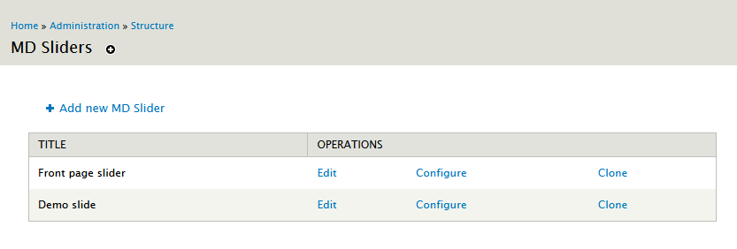
Here you can manage all your sliders, edit, clone or delete a slider.
Creating a new slider
To create a new slider, you can go to Structure » MD Slider and click "Add new MD Slider" to start creating new slider.
Edit slider
One slider is split in two parts: Config and Main slide items. You can click to Configure to change slider config and click Edit to change slider items.
Cloning an existing slider
Cloning an existing slider is easy, just click Clone link from slider overview page.
Delete a slider
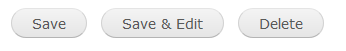
To delete a slider, you need to click Configure and scroll to bottom. Here you will find delete button, just click to delete your slider.
1. Basic config
At the first screen, you will see several parameters that you can change to customise your slider.
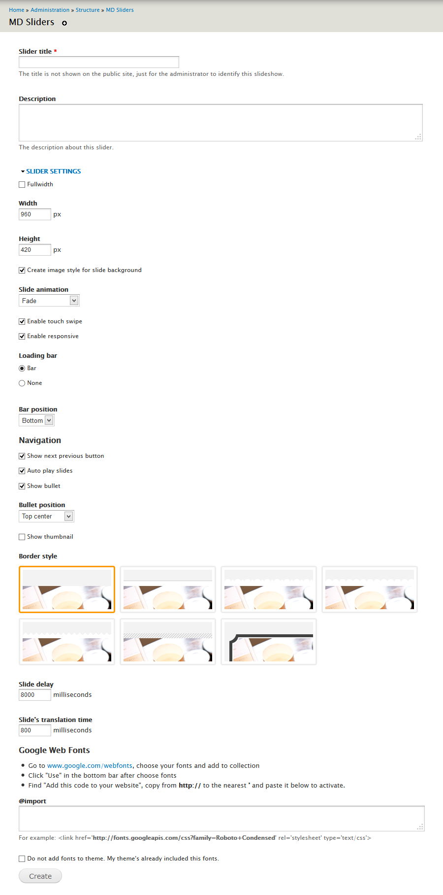
Slider title: This title is just for the administrator to identify the slideshow.
Description: If title field is not long enough, you can type description of your slider here
Fullwidth: Tick if you want your slider full width
Width: Insert your slider width (in pixel). If you checked full width, this value will be effect width.
Height: Insert your slider height (in pixel)
Create image style for slide background: This function helps you to automatically create image according to your slideshow size. If you have pixel perfect image for slider and don't need automatically created image, uncheck this box. (This option is not available when you enable slider fullwidth)
Slide animation: Choose animation to your slide
Enable touch swipe: if you want to navigate slide on touch device, check this box
Enable responsive: if you want your slider to be automatically fit to wrapper (the original proportion is remained), check this box
Loop: Check if you want slider start over when reaching last item.
Loading bar: Enable/disable your slider loading bar
Navigation: show next, previous arrows, play button... Here you can choose bullets and thumnails position too.
Border style: Click and choose border style for your slider
Slide delay: milliseconds between slide transitions
Slide's translation time: speed of the transition (in milliseconds)
Google Web Fonts: Add google font to use on your slider. If you've already add those fonts to your theme, check "Do not add fonts to theme".
Click Create button, you will go to edit step.
2. Edit & Custom your slide items
After click Create button, you will go to edit page
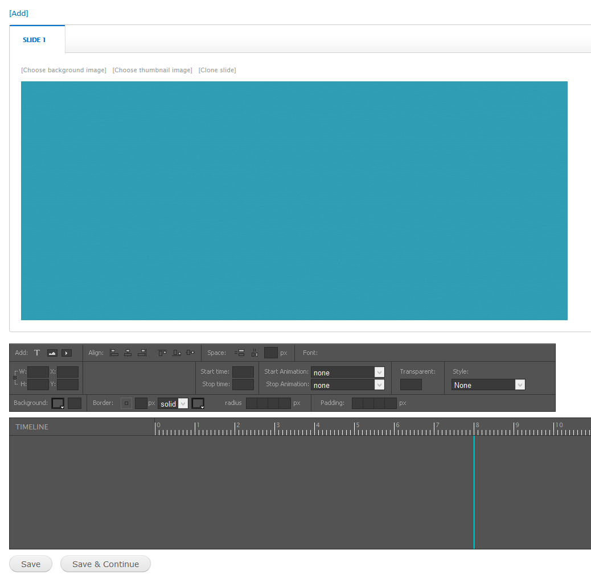
This page split in 3 parts: slide items panel, Tools panel and Timeline panel
2.1. Slide items panel
Each tab in the slide item panel is representative of each slide item. You can Add new {1}, clone {4}, re-order {2} or remove {3} slide item. Just click and drag your mouse.
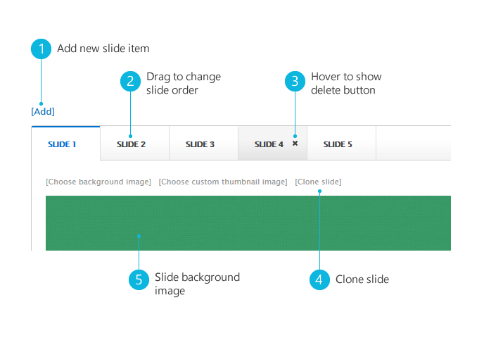
2.2. Tools panel
The Tools panel helps you add new objects, edit object align, background, animation...
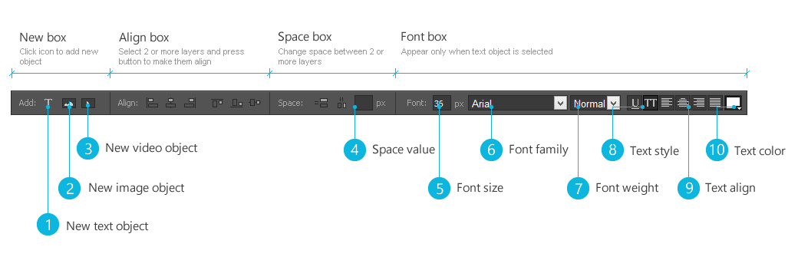
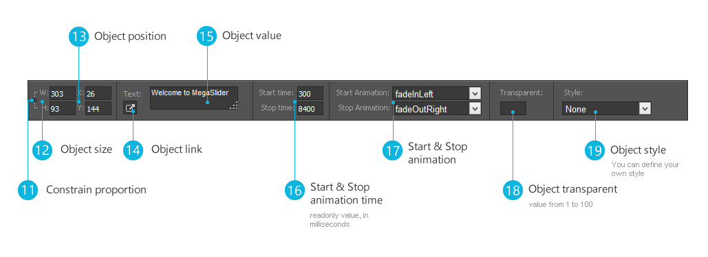
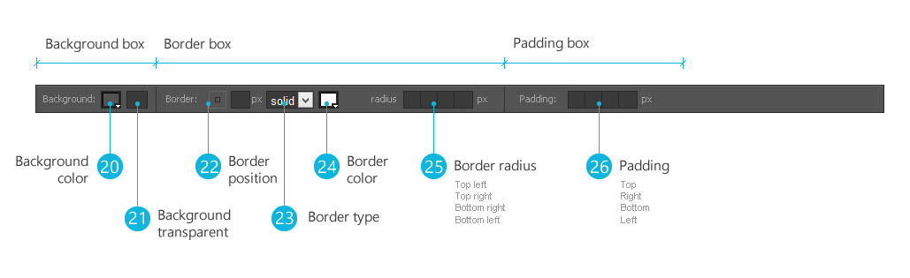
When you select an object, the Tools panel will show you options. Some tool options are only displayed if you choose a particular type of selected object.
2.3. Timeline panel
The Timeline panel organizes and controls a slide's content over time in layers. Layers are stacked on top of one another, each one contains a specificed text, image or video.
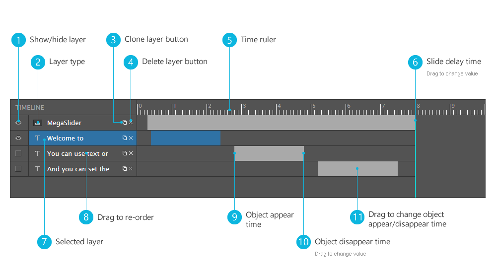
Slides can have different delay time options, you can drag delay line {6} to change this value.
Controls in the layers section of the Timeline make it possible to hide, show {1}, clone {3}, delete {4} or re-order {8} layers. You can drag to adjust layer start {9}, stop {10} time or position {11}.
2.4. Working with objects
2.4.1. Add new object
You can add new object to slide item by clicking to icons {1}, {2}, {3} at tools panel. In term of image object, you can upload image from your computer or choose existing image from server. Video object supports Youtube & Vimeo, all you need to do is provide Youtube or Vimeo video link.
2.4.2. Selecting an object
Before you can do anything with any object, you must select it. You can select object with mouse click or using layer in timeline panel. You can also select multi objects by holding ctrl button and click on objects.
2.4.3. Selection information in the tools panel
Whenever you select an object, the tools panel will show information & properties of the object. You can customize objects by changing value from tools panel.
2.4.4. Moving an object
This is a very simple step, and you can move object to exactly place that you want:
Select an object
Press & hold left mouse button and move your pointer.
Or you can change in tools panel: enter the X and Y coordinates for the location of the top left corner of the selection ({13} - tools panel).
2.4.5. Aligning objects
The Align commands in the tools panel give you a wide range of arrangement
options, allowing you to do any of the following:
Align selected objects along a horizontal or vertical axis.
Align selected objects vertically along their right edge, center, or left edge, or horizontally along their top edge,
center, or bottom edge.
2.4.6. Changing objects space
The Space commands in the tools panel help you control space between objects. You can change horizontal or vertical space.
Select 2 or more objects
Enter number into space value ({4} - tools panel) (leave blank if you want space evenly)
Press space button
2.4.7. Style an object
You can style an object depending on object type
Image/Video objects: you can change background ({20} - tools panel), make objects transparent ({18} - tools panel), choose style ({19} - tools panel)
Text object: with text object, you can do more: choose font family, font size, text align and text color (Font box- tools panel)
3. Assign slider to region
After creating slider, you need to assign it to some region. From admin toolbar, click Structure » Block, find "MD Slider: (your slider name)" and drag it to your desire region.
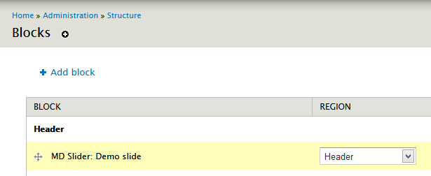
And now you can go to your website and enjoy new slider.
Customization
If you do want to create a custom style for your slider you can use a copy of the default css file, which is held in the same folder as this help file - see md-slider-style.css.
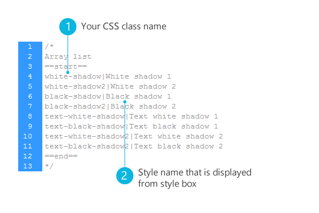
MegaSlider will check if you have custom file and use it. The following examples will explain the style suggestion names:
Photoshop file just for custom border style. If your background is not white, and you use rounded border (border style - basic config step), change first layer color to fit your layer style. Export file (png 24) to md_slider/images/border folder.